微服务架构中的进程通信
1. 微服务架构中的进程通信概述
1.1 交互方式

1.2 如何定义 API
API 优先设计：先初步定义好前后端或者微服务之间的接口，再编码。
语意化版本控制：使用 MAJOR.MINOR.PATCH 来进行版本控制。
- MAJOR：当对 API 进行不兼容的更改时
由于无法强制客户端立即升级，因此服务必须在一段时间内同时支持新旧版本的 API 。如果是使用 REST 进行进程间通信，一种方法是在 URL 嵌入主要版本号，如版本1 /v1/… 作为前缀，版本2以 /v2/… 作为前缀。
另一种方式是使用 HTTP 的 内容协商机制 ，并在 MIME 类型中包含版本号。如：客户端使用如下格式针对 1.x 版的服务 API 发起 Order 相关请求：
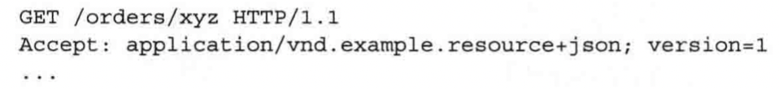
此请求告诉 Order Service 客户端需要以版本 1.x 做出响应。
为了支持多个版本的 API ，必要时需要实现 API 的服务适配器，以完成旧版本和新版本之间的转换。
- MINOR：当对 API 进行向后兼容的增强时
向后兼容的更改时对 API 的 附加更改 或 功能增强：
- 添加可选属性
- 向响应添加属性
- 添加新操作
为了实现向后兼容，服务应该为缺少的请求属性提供默认值。同时，客户端应该忽略任何额外的响应属性。
- PATCH：当进行向后兼容的错误修复时
消息的格式：
- JSON 、 XML 基于文本的格式
好处是可读性高，缺点是消息过度冗长，造成额外开销；解析文本引入额外开销。
在对效率和性能敏感的场景下，可能需要考虑基于二进制格式的消息。
- 二进制消息格式
常用的二进制消息： Protocol Buffers 、 Avro 。
这两种格式都提供了一个强类型定义的 IDL （接口描述文件），用于定义消息的格式。编译器会自动根据这些格式生成序列化和反序列化的代码。因此采用二进制消息格式必须采用 API 优先的方法。
这两种二进制格式的区别： Protocol Buffers 使用 tagged fields （带标记的字段），而 Avro 的消费者在解析消息之前需要知道它的格式。因此实行 API 的版本升级演进， Protocol Buffer 要优于 Avro 。
2. 基于同步远程过程调用模式的通信
实现方式： REST 、 gRPC 、 GraphGL
2.1 REST
REST 中的 资源 通常表示单个业务对象，如客户或产品或业务对象的集合。 REST 使用 HTTP 动词来操作资源，使用 URL 引用这些资源。如 GET 请求用于获取资源。POST 请求用于创建新资源， PUT 请求用于更新资源，等。
REST成熟度模型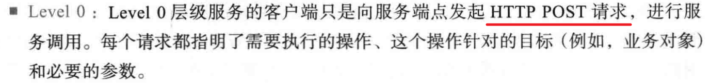
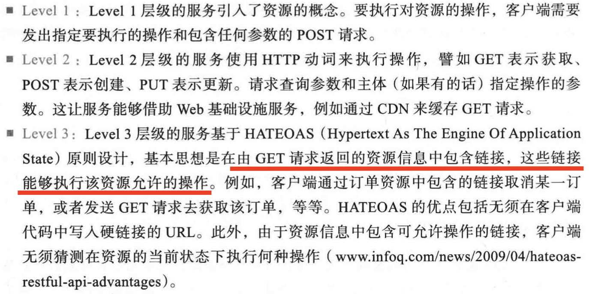
使用 REST 时的挑战
- 在一个请求中获取多个资源的挑战
示例：假设 REST 客户端需要检索 Order 和这个 Order 的 Consumer 。纯 REST API 要求客户端至少发出两个请求，一个用于 Order 一个用于 Consumer 。更复杂的情况是需要更多往返并且遭受过多的延迟。
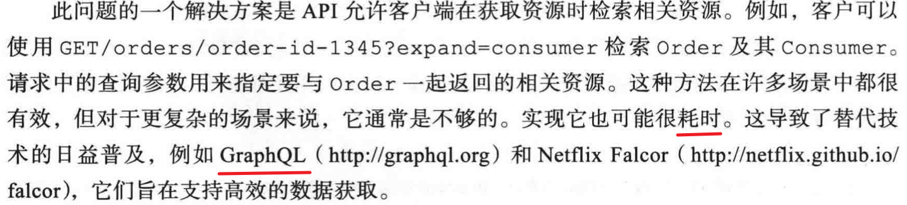
- 把操作映射为 HTTP 动词的挑战
即按照 HTTP 动词的语意来定义 API 接口。或者将 HTTP 动词放入请求路径中。
这两种方式都不是特别符合 RESTful 的要求。
这方面 gRPC 较好的解决了这种问题。所谓这种问题指的是 HTTP 动词无法更细粒度的描述化进程通信的具体操作，如使用 PUT 更新订单，但是更新订单又分为取消订单、修改订单等。
REST 的好处与弊端
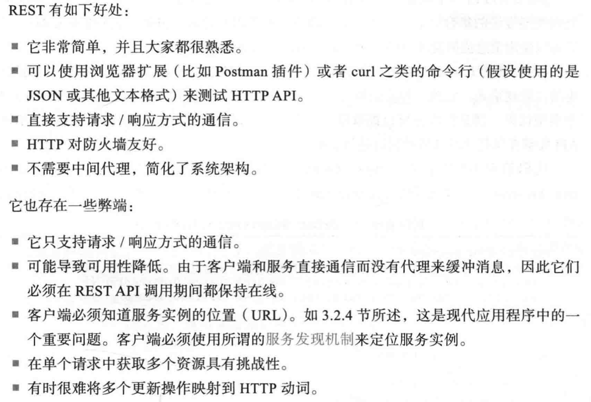
2.2 gRPC
2.2.1 概述
- 用于编写 跨语言客户端和服务端 的框架
- 基于二进制消息的协议。
- 可以使用基于 Protocol Buffer 的 IDL 定义 gRPC API ，这是 google 用于 序列化结构化 数据的一套语言中立机制。
- 客户端和服务端必须使用 HTTP/2
- 支持 流式 RPC ，即服务器与客户端之间的相互通信可以使用消息流。
Protocol Buffers
- 是 google 用于 序列化结构化 数据的一套语言中立机制。
- 可以使用 Protocol Buffer 编译器生成客户端的桩（stub ，也称为存根）和服务端骨架（skeleton）。
- Protocol Buffers 是一种高效且紧凑的二进制格式，它是一种标记格式。 Protocol Buffers 消息的每个字短都有编号，并且有一个类型代码。消息接收方可以提取所需的字段，并跳过它无法识别的字段。因此 gRPC 使 API 能够在保持向后兼容的同时进行变更。
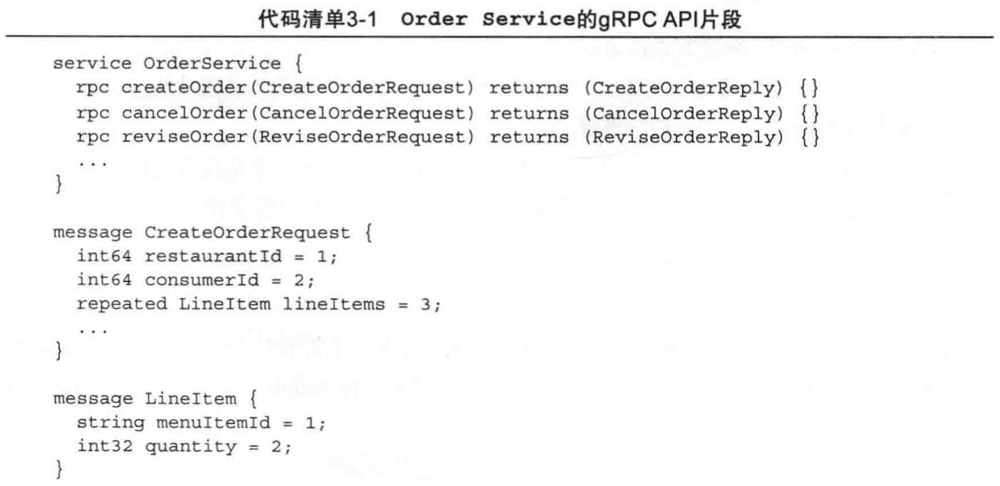
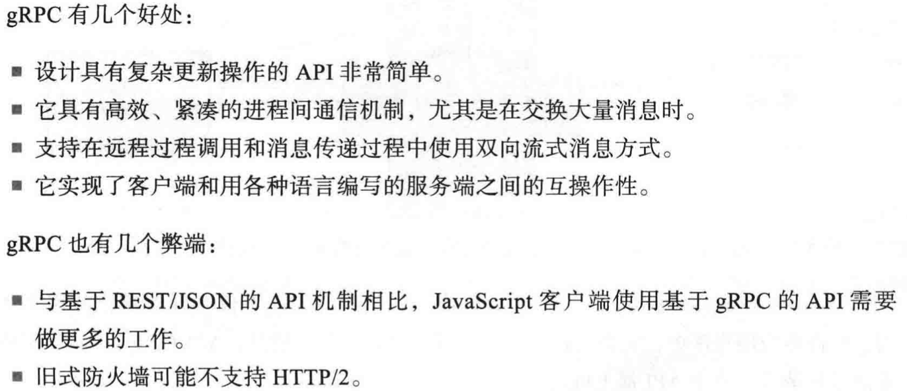
2.2.2 gRPC 的局部故障问题
与 REST 一样， gRPC 也是一种同步通信机制，因此也存在 局部故障 的问题。
- 使用断路器模式处理局部故障
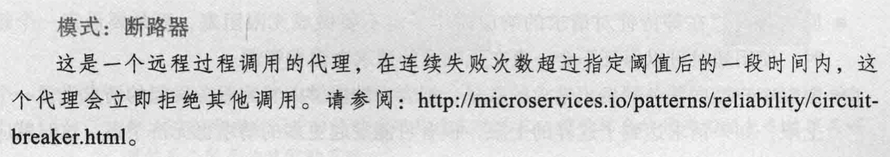
关键点：
- 具有识别无响应服务的能力
- 具有从失败的远程服务中恢复的能力
- 网络超时。
- 限制客户端向服务器发出请求的数量。对于超过上限的请求进行拒绝或者立刻失败。
- 断路器模式。监控客户端发送请求的成功和失败的数量。如果失败比例超过一定阈值，就启动断路器，让后续的调用立刻失败。在经过一段时间后，客户端继续尝试，如果调用成功，则解除断路器。
当出现服务故障时，可以返回缓存中的内容也可以直接返回错误，也可以跳过，这个要看服务的重要程度。
- 使用服务发现
如 Eureka 。 K8S 中也有服务发现机制。
使用服务发现的一个缺点是：服务发现的框架是与语言绑定的。如 C 服务就不能使用 Eureka 。
3. 基于异步消息模式的通信
3.1 使用消息机制实现交互方式
- 实现请求 / 响应和异步请求 / 响应
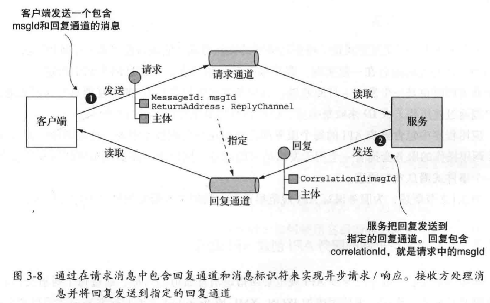
- 实现单向通知
- 实现发布 / 订阅
- 实现发布 / 异步响应
3.2 为基于消息机制的服务 API 规范
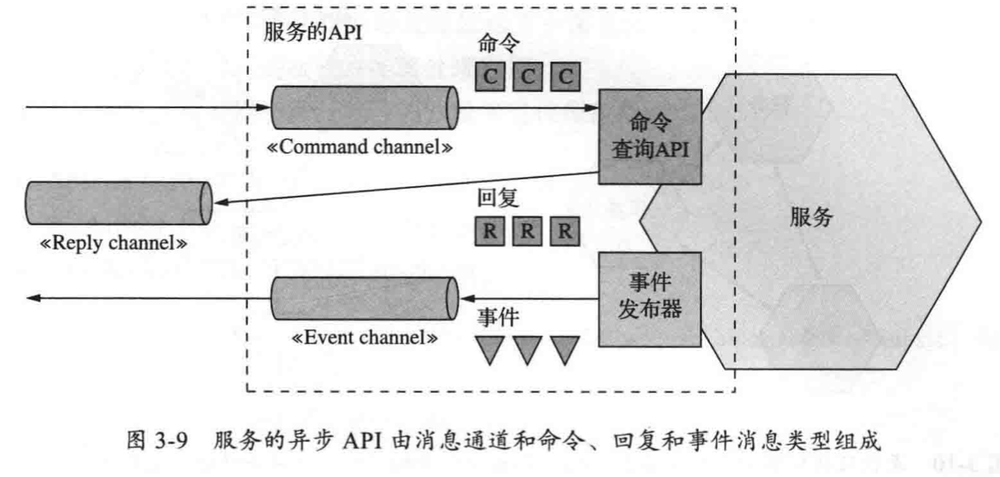
- 请求 / 异步响应式 API 规范：命令消息通道、命令式消息的具体类型和格式、以及服务返回的回复消息的类型和格式。
- 单向通知式 API 规范：命令消息通道、服务接受的命令式消息的具体类型和格式。
- 发布 / 订阅式 API 规范：事件通道、服务发布到通道的事件式消息的类型和格式。
3.3 消息代理
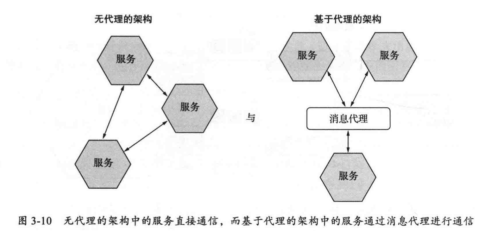
无代理架构的优缺点：
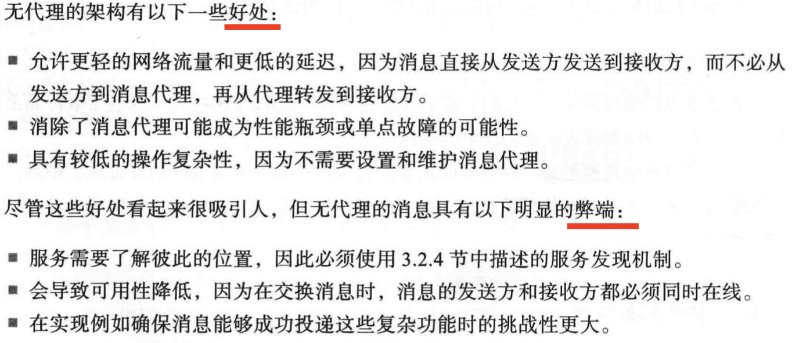
基于消息代理的架构
使用基于消息代理的架构需要考虑以下几方面的问题：
使用消息代理的优点：
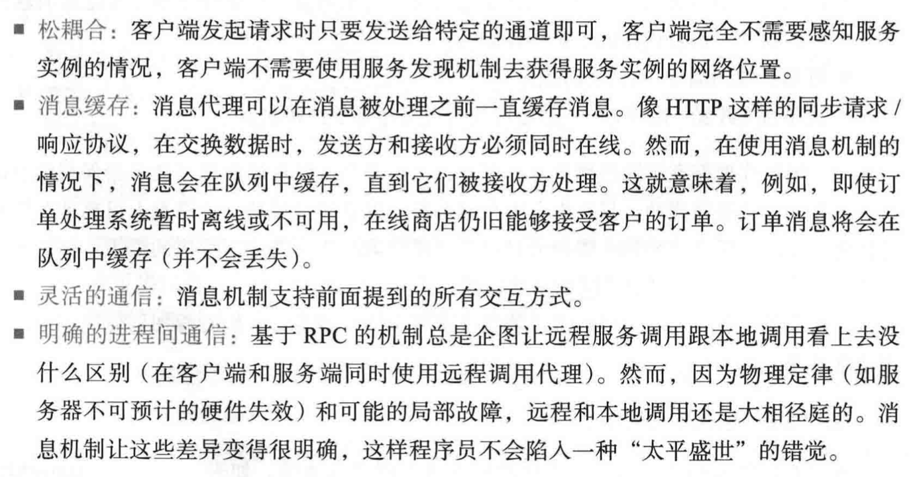
使用消息代理的缺点：
MQ如何保证消息顺序：
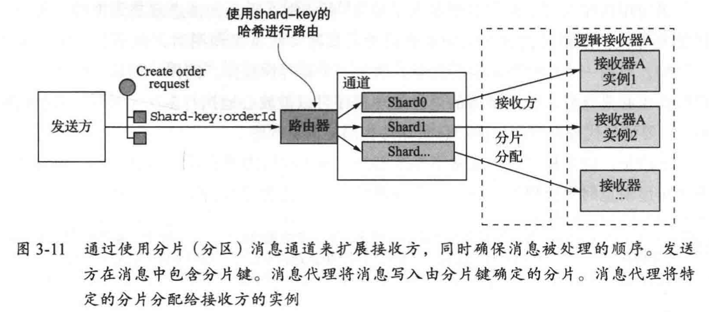
MQ 如何处理重复消息：
- 编写幂等消息处理程序
- 跟踪消息并丢弃重复项
由于应用逻辑通常不是幂等的。因此可以使用第二种方式。这种方式需要消息中存在能够唯一标识这个报文的 ID 。通过该 ID 来做幂等。如果报文 ID 是重复的，则认为该报文重复发送，直接丢弃即可。
3.4 事务性消息
所谓事务性消息是指：数据库的更新和消息的发送都在一个事务中进行。否则，会出现更新数据库成功，却没有发送消息的问题。
解决方式: 使用数据库表作为消息队列
这种方式依靠本地事务的 ACID 特性来保证事务性消息。服务通过将消息插入到数据库表中来发送消息。
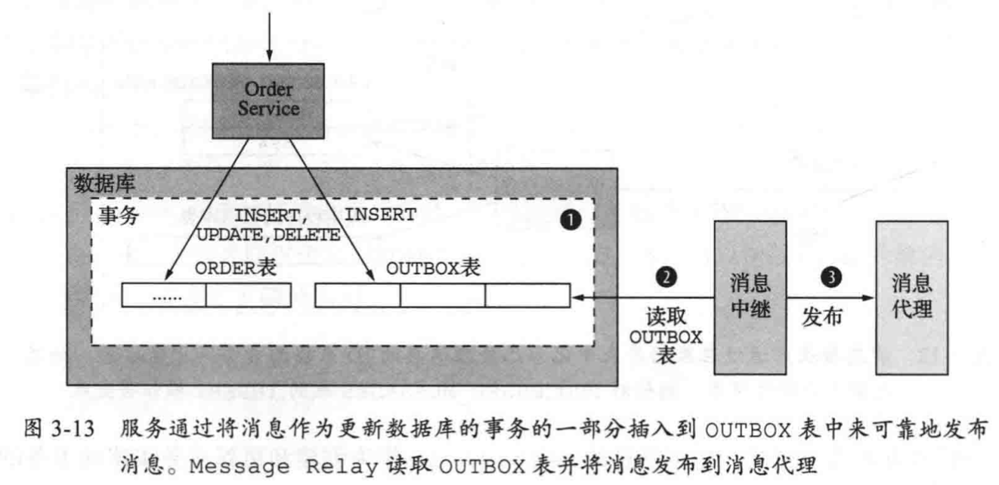
实现将消息从数据库移动到消息代理并对外发送：
- 通过轮询模式发布事件
让 MessageRelay 在表中定期查询未发布的消息，并将未发布消息发送给消息代理，发送成功后从数据库表中删除该消息。
弊端：
- 经常轮询数据库可能造成昂贵的开销，导致数据库性能下降。
- 使用事务日志拖尾模式发布事件
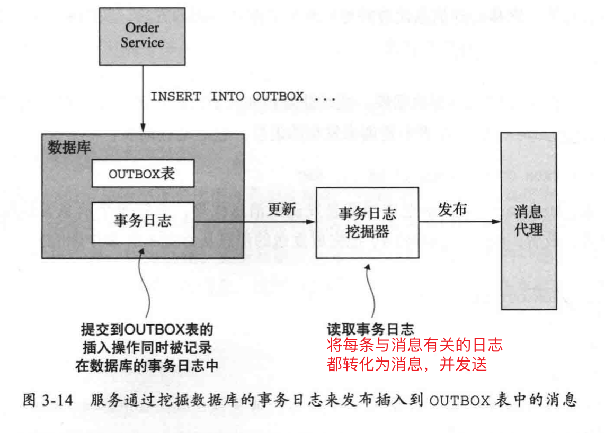
实现日志拖尾的框架：
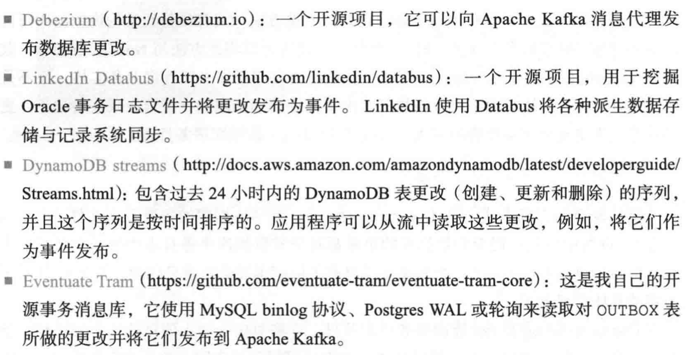
3.5 使用异步消息提高可用性
若使用同步消息进行跨服务通信，那么整个系统的可用性是与各个子系统的可用性相关的。假设 n 个子系统的可用性都是 99% ，那么整个系统的可用性就是 0.99的n次方。
使用异步交互模式：
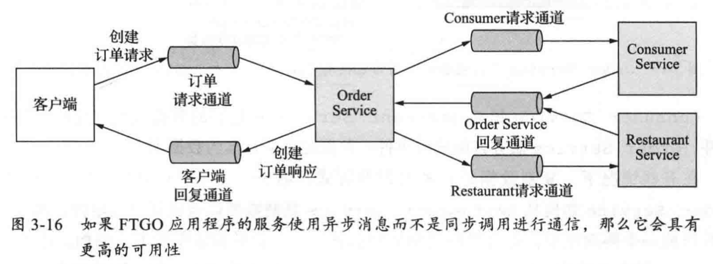
但是服务很多情况下都是采用类似 REST 的同步通信协议的外部 API，并且对请求立即做出响应。为了解决这个问题，可以采用下述方式。
复制数据：
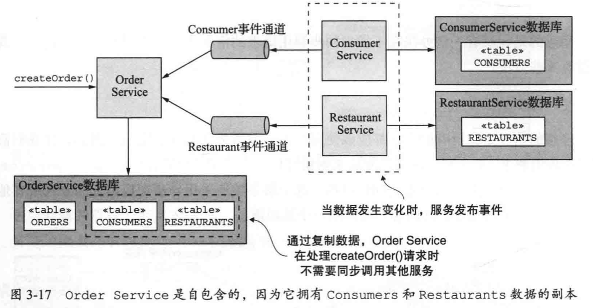
Order Service 从 ConsumerService 数据库中复制所有消费者的信息存入到 OrderService 数据库中。对于 RestaurantService 数据库也是一样的复制。当 ConsumerService 数据库或者 RestaurantService 数据库发生变化时使用订阅发布的方式通知 OrderService 数据库更新。
弊端：
- 复制的数据量巨大的情况下，会导致效率低下。
- 没有从根本上解决 Order 服务如何更新其他服务（ConsumerService，RestaurantService）所拥有的数据的问题。
另一种消除同步通信的方式是先返回响应，再完成处理
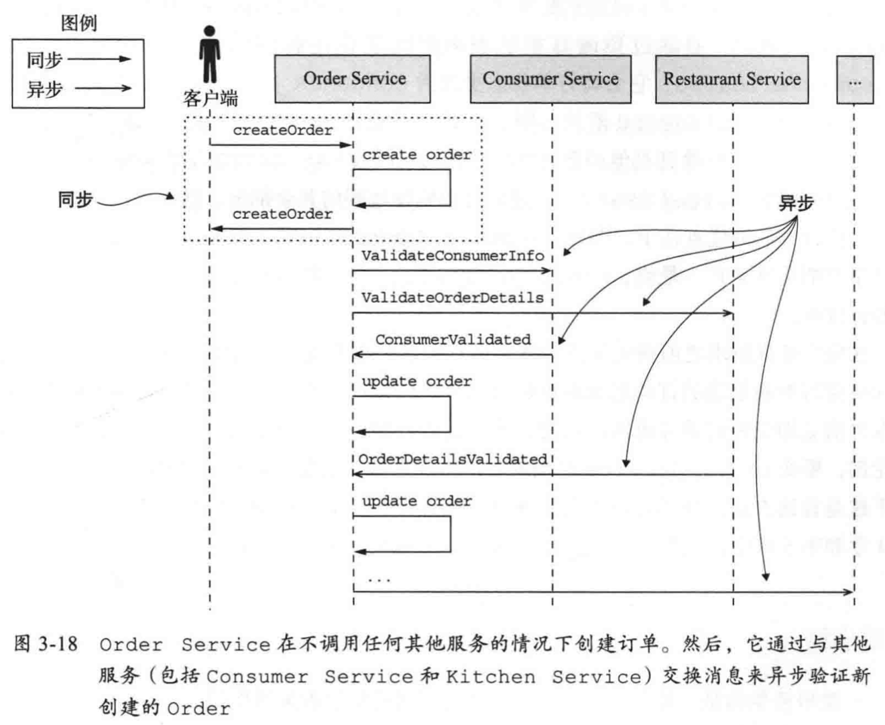
OrderService 可以创建一个未经验证（Pending）状态的订单，然后通过一步交互的放肆好直接跟其他服务通信来完成验证。
在完全处理请求之前响应服务的弊端是它使客户端更复杂。例如， OrderService 在返回响应时对新创建的订单的状态提供最低限度的保证。他会在验证订单并授权消费者的信用卡之前立即创建订单并返回。因此，为了使客户端知道订单是否已经成功创建，要么必须 定期轮询 要么 OrderService 必须向客户端 发送通知消息。
4. 总结
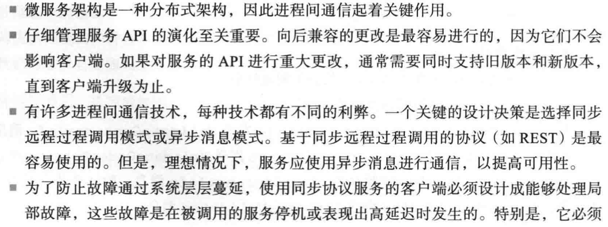